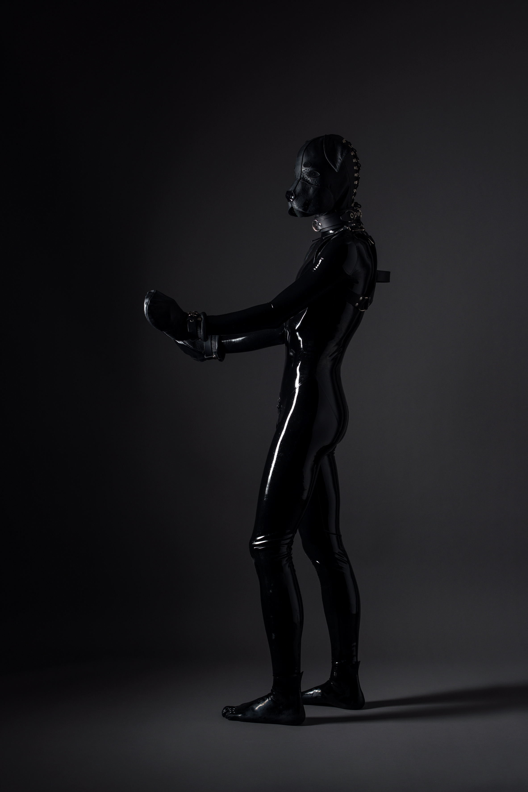
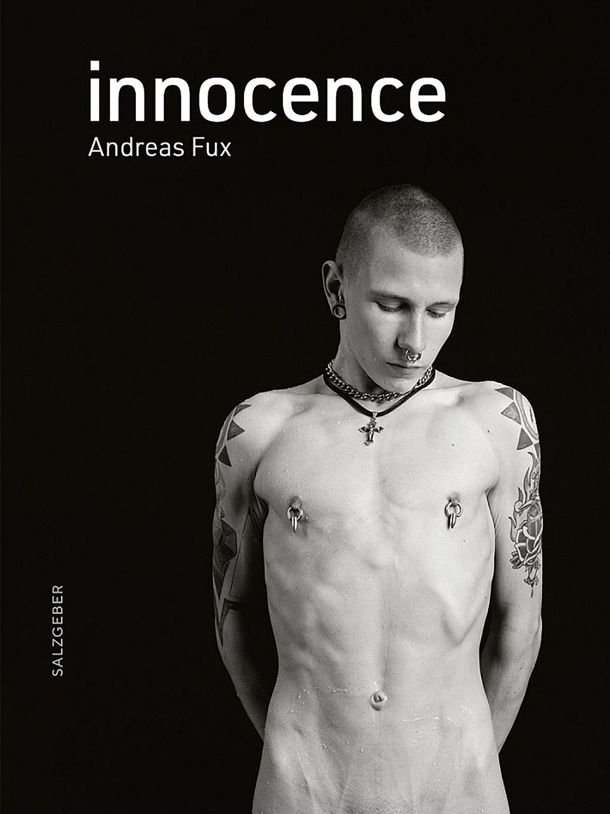

ANDREAS FUX
FOTOGRAF — BERLIN

Andreas Fux
Schon in den 1980er Jahren, als die DDR noch existierte, ist Andreas Fux schon künstlerisch aktiv geworden, hat mit seiner Kamera sein (Ost-)Berlin erobert, ihre Menschen im öffentlichen Raum porträtiert und mit Freunden bereits intime Foto-Sessions abgehalten. Erst jüngst hat die vierteilige, über Berlin verstreute Ausstellung Queere Kunst in der DDR? ihn als authentischen und gegen den Strom schwimmenden Künstler mit schwuler Identität vorgestellt. Die scheinbar durchchoreographierten, hoch ästhetischen Kompositionen vor klinisch weißem Grund in den frühen 2000ern, vor dem sich junge Menschen z. B. ihr scarfing, ihre blutige Ritzzeichnung mit der Rasierklinge durchführen, haben den Künstler auch außerhalb der Gay Community spätestens dann sehr bekannt werden lassen. Doggy Action in High Reflection von 2018 ist nicht nur etwas für Fetisch-Liebhaber. Es ist ein Meisterwerk! Schwarz in schwarz. Die Körperform des in Vinyl mit Hundemaske gekleideten Mann ist durch den zarten modellierenden Lichtstreifen besonders gut lesbar..
As early as the 1980s, when the GDR still existed, Andreas Fux was already active as an artist; he explored (East) Berlin with his camera, portrayed its people in public spaces, and held intimate photo sessions with friends. Most recently, the four-part exhibition Queer Art in the GDR?, spread across Berlin, presented him as an authentic artist with a gay identity who swims against the tide. The seemingly choreographed, highly aesthetic compositions against a clinically white background from the early 2000s—in which young people, for example, engage in “scarfing” or create bloody self-harm marks with razor blades—made the artist widely known even outside the gay community by then at the latest. Doggy Action in High Reflection from 2018 isn’t just for fetish enthusiasts. It’s a masterpiece! Black on black. The body shape of the man, dressed in vinyl and wearing a dog mask, is particularly clearly defined by the delicate, sculpting streak of light.
Buch

Innocence
Kurzer Beschreibungstext zum Buch. Hier Umfang, Format, Ausstattung und ein Satz zum Inhalt.